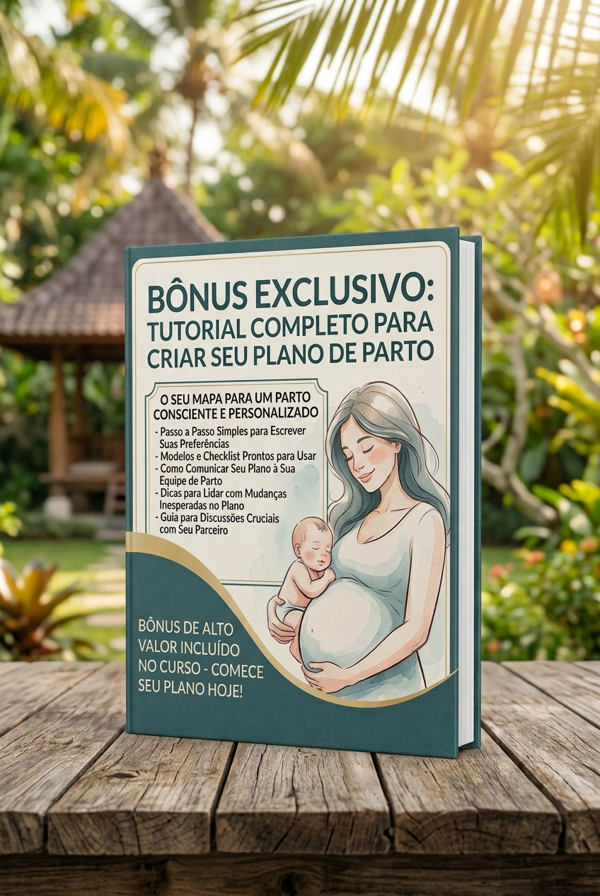

Muito mais do que aulas: um espaço para o casal construir a própria autonomia, entender as fases do parto e transformar o medo do desconhecido em confiança.
Um guia prático e exclusivo para você e seu parceiro organizarem as preferências do nascimento e conversarem com a equipe médica com clareza e segurança.
Preencha abaixo e receba o material gratuitamente:
Seus dados estão seguros. Não enviamos spam.

Repertório prático e segurança emocional para tomar decisões alinhadas com os seus desejos
Você não sai apenas com informações. Ao final do curso, vocês terão em mãos um documento estruturado para comunicar à equipe hospitalar exatamente como desejam que o nascimento aconteça, garantindo que suas escolhas sejam respeitadas.
O parceiro deixa de ser um expectador. Ele aprende técnicas práticas de alívio da dor, massagens, como identificar o momento certo de ir para a maternidade e como ser o verdadeiro porto seguro da gestante.
Treinamento em manequins e orientações práticas sobre banho, troca de fralda, cuidados com o coto umbilical e amamentação. O casal ganha a confiança necessária para cuidar do bebê sem pânico na primeira semana em casa.
Entender a fisiologia do corpo reduz o medo. Você passa a compreender que a dor do trabalho de parto é um processo natural e que existem recursos (naturais e anestésicos) para lidar com ela de forma consciente, e não como uma punição.
Sábados, das 13h30 às 18h00 | Um módulo construído sobre o outro para formar o repertório do casal.
Diretrizes essenciais para garantir um acompanhamento clínico seguro, preventivo e pautado na escuta qualificada.
Repertório que você leva: Um checklist de perguntas cruciais para fazer ao seu obstetra nas próximas consultas.Exercícios focados em mobilidade pélvica, alívio de dores lombares e preparo corporal para o parto.
Repertório que você leva: Três exercícios de alívio de dor lombar que você pode fazer em casa.Guia prático nutricional para sustentar a energia da gestação e otimizar a recuperação pós-parto.
Repertório que você leva: Lista de alimentos que auxiliam na recuperação e na amamentação no pós-parto imediato.Por que guardar células-tronco do sangue do cordão? Informações cruciais sobre medicina regenerativa e proteção imunológica.
Repertório que você leva: Clareza sobre o calendário vacinal obrigatório e opcional para tomar decisões informadas.Compreensão fisiológica profunda de como o corpo conduz o nascimento de forma natural e segura.
Repertório que você leva: Como identificar os sinais reais de trabalho de parto e quando é a hora certa de ir para a maternidade.Uso de hidroterapia, massagens e posturas ativas que respeitam o ritmo do corpo.
Repertório que você leva: O "mapa da dor": técnicas de respiração e massagens que o parceiro pode aplicar na hora.Esclarecimentos transparentes sobre opções de analgesia e suporte anestésico humanizado.
Repertório que você leva: Entendimento de que a analgesia não é um "fracasso", mas uma ferramenta de conforto com hora certa.Qual a rotina da recepção do seu bebê numa sala de parto humanizada? Transição suave e contato pele a pele.
Repertório que você leva: Como exigir o clampeamento oportuno e o contato pele a pele imediato, mesmo em ambiente hospitalar.Estratégias práticas para que o parceiro seja um verdadeiro porto seguro e suporte emocional.
Repertório que você leva: O "manual de instruções" do parceiro para saber o que falar e como agir em cada fase.Preparação realista para a "quarta fase" e as transformações intensas do pós-parto.
Repertório que você leva: Um plano de apoio realista para a rede de suporte (avós, tios) nos primeiros 40 dias.Acolhimento da saúde mental, medos comuns e construção conjunta da nova dinâmica familiar.
Repertório que você leva: Ferramentas para identificar sinais de depressão pós-parto e como pedir ajuda sem julgamentos.Alívio de sobrecargas biomecânicas corporais na gestação e suporte inicial ao recém-nascido.
Repertório que você leva: Compreensão de como a osteopatia pode aliviar dores e auxiliar na recuperação do parto.Aula prática intensiva em manequins para os pais ganharem total segurança nos primeiros dias em casa.
Repertório que você leva: Prática real com manequins e um "passo a passo" para os primeiros dias.Técnicas de pega correta, prevenção de fissuras e estabelecimento tranquilo da amamentação.
Repertório que você leva: Como resolver as "dores" do início da amamentação e o que fazer se o bebê não pegar.Um projeto colaborativo que reúne diferentes especialistas em torno de um cuidado humanizado
O curso é um projeto idealizado e curado pelo Dr. Ayrton Daniel, que reuniu uma equipe de profissionais qualificados e com um olhar alinhado à verdadeira humanização do parto. Cada especialista contribui com sua expertise, criando um ambiente colaborativo e acolhedor para os casais.
Experiências reais, momentos únicos de quem vivenciou a preparação DoVentre
"Foi transformador entender melhor o papel do acompanhante no parto. Meu parceiro saiu mais preparado e confiante!"
"Nunca imaginei que aprender sobre o puerpério faria tanta diferença. Me sinto acolhida e pronta para essa fase."
"As dicas de alimentação e os cuidados com o bebê me deixaram muito mais segura. Amei cada momento!"
"A aula prática de cuidados com o bebê foi essencial. Agora sei como dar banho e trocar fralda sem medo!"
Estamos aqui para caminhar com você. Turmas intencionalmente reduzidas para preservar o acolhimento, a troca de experiências e a qualidade das aulas práticas.
Inscrever-se pelo WhatsApp (19) 99660-2397